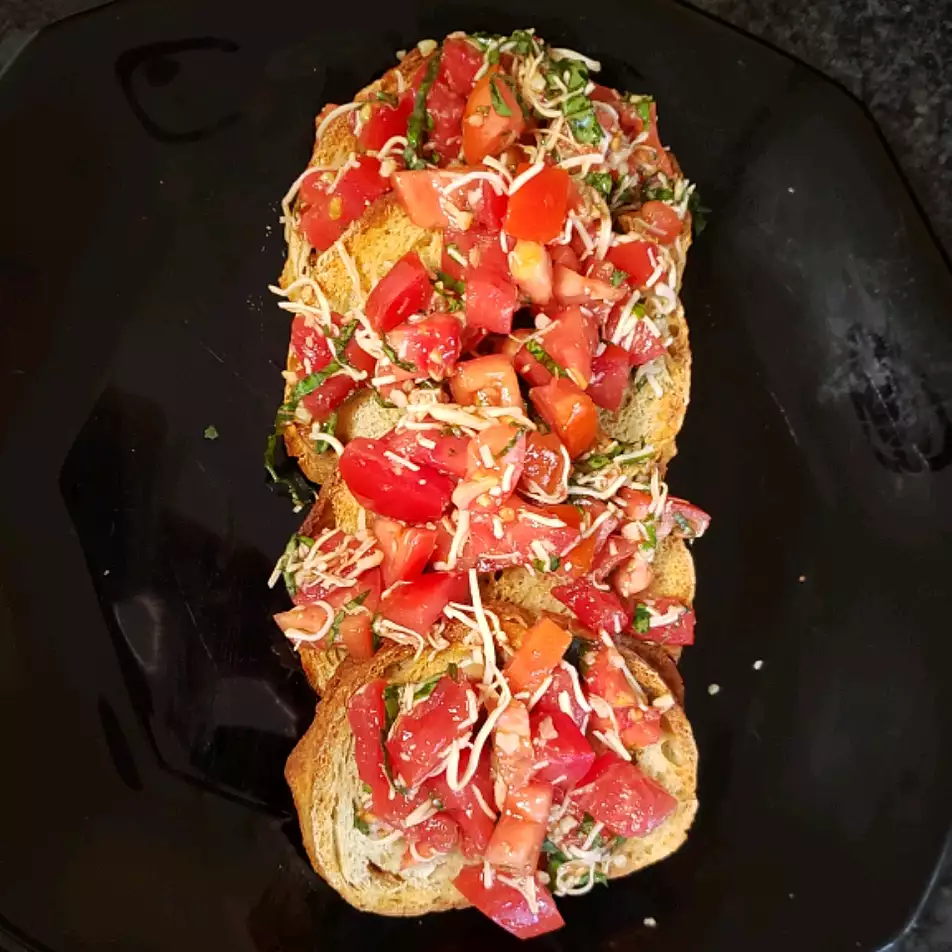

Balsamic Bruschetta

Description
Balsamic Bruschetta is a common Italian appetizer that is incredibly easy to make and very delicious. A savory blend of tomatoes, cheese, garlic, and basil over warm, oiled bread delights many hungry eaters!
Ingredients
- 1 loaf of French bread, cut into 1/4" slices
- 8 plum tomatoes, diced
- 1 tablespoon extra-virgin olive oil
- 1/3 cup chopped basil
- 2 cloves of garlic, minced
- 1 ounce Parmesean cheese, finely grated
- 1 tablespoon balsamic vinegar
- 2 teaspoons extra-virgin olive oil
- 1/4 teaspoon kosher salt
- 1/4 teaspoon ground black pepper
Steps
- Preheat oven to 400F
- Brush bread slices on both sides with 1 tablespoon of oil and place on a baking sheet.
- Toast bread in oven until golden (5-10 minutes), turning halfway through.
- While toasting the bread, toss together your diced tomatoes, basil, Parmesean cheese, and garlic in a bowl, mixing in balsamic vinegar, 2 tablespoons of olive oil, kosher salt, and pepper.
- Pull out your bread, and spoon the tomato mixture over every slice and serve hot!